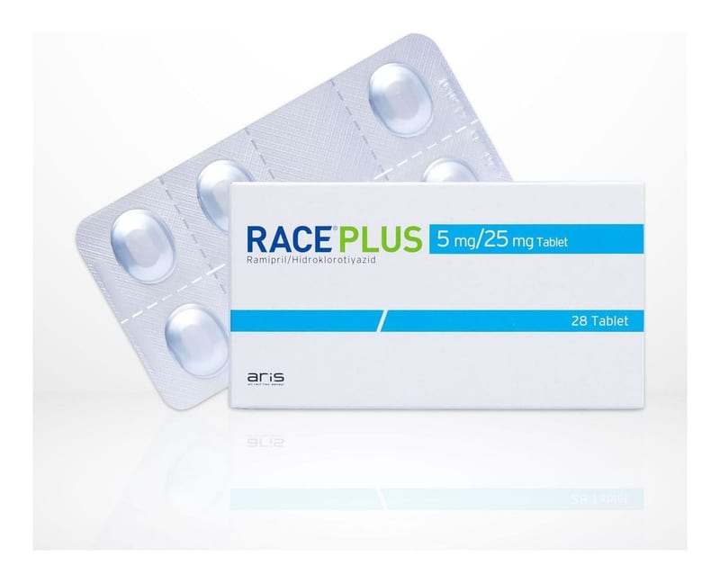

Race Plus 5 mg/25 mg Tablet, 28 Adet

Ne için kullanılır
KT · Bölüm 1• RACE®PLUS kan basıncının düşürülmesine yardımcı olan iki farklı etkin madde (ramipril ve hidroklorotiyazid) içeren bir ilaçtır. Bu etkin maddelerden ramipril Anjiyotensin Dönüştürücü Enzim İnhibitörleri (ADE İnhibitörleri) adı verilen bir ilaç grubuna dahildir. Şu şekilde çalışır: • Vücudunuzun kan basıncını yükselten madde üretimini azaltmak • Kan damarlarınızı gevşetmek ve genişletmek • Kalbinizin vücudunuza kan pompalamasını kolaylaştırmak Diğer etkin madde olan hidroklorotiyazid ise, tiyazid sınıfından idrar söktürücü (diüretik) ilaçlar grubuna aittir. Böbrekler üzerine etki ederek, idrara çıkma sıklığını artırır ve bu yolla kan basıncını düşürür. Her iki maddenin tansiyon düşürücü etkileri birbirini tamamlamaktadır.
• RACE®PLUS, oblong, bir yüzü çentikli ve "+25" baskılı beyaz, beyaza yakın 28 tablet içeren blister ambalajda kullanıma sunulmuştur. Piyasada RACE®PLUS 2.5 mg/12.5 mg tablet adlı, 28 tablet içeren diğer formu da bulunmaktadır.
• RACE®PLUS, iki etkin maddenin birbirini tamamlayan tansiyon düşürücü etkilerinden yararlanmanın gerektiği yüksek kan basıncı (esansiyel hipertansiyon) tedavisinde kullanılmaktadır. Doktorunuz size RACE®PLUS'ı, ilacın içerdiği iki etkin maddenin birbirini tamamlayan etkilerinden yararlanarak, tansiyonunuzu düşürmek için reçete etmiştir.